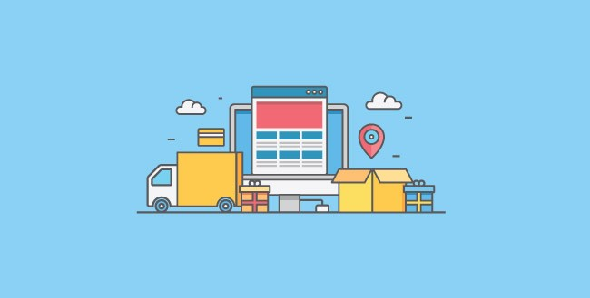

PRINCIPAL
B2B
B2C
B2E
C2C
B2G
C2G
ECOMMERCE DE PRODUCTOS DIGITALES
ECOMMERCE DE INFOPRODUCTOS
ECOMMERCE DE SERVICIOS
ECOMMERCE OPEN SOURCE
ECOMMERCE SOFTWARE AS SERVICE
ECOMMERCE SOFTWARE AS SERVICE (SAAS)
El término se refiere a la entrega y licencia de
de software donde los usuarios finales acceden
al software en línea. Los usuarios finales generalmente
pagan una tarifa de suscripción regular para poder
usar el software.
(S.A.A.S) es la institución encargada de garantizar
permanentemente la seguridad, integridad física
y la vida del Presidente y Vicepresidente de la
República, la de sus respectivas familias, asi
como brindarles apoyo.
Los SaaS representan una nueva forma de hacer las cosas.
Se trata de un modelo de negocio basado en
programas informáticos que resultan ser una solución
muy útil por ser universales, económicos y, sobre
todo funcionales.
Ya no es imprescindible comprar o vender un
producto físico. Existe determinado software que
aporta tanto valor añadido como para convertirse en
un producto en sí mismo.
